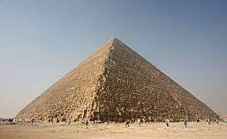

Piramidė yra seniausias iš septynių pasaulio stebuklų ir vienintelis, išlikęs iki mūsų dienų. Senovės Egipto laikais jos vardas buvo „Chufu horizontas“. Visa struktūra, kurios originalus aukštis buvo apie 146,65 m ir kvadratinio pagrindo kraštinės ilgis 235,5 m, užima 40 000 kvadratinių metrų plotą, yra pastatyta iš apie 2,3 mln. akmens luitų. Dabartinis piramidės aukštis − 137,38 m, jos išorinės sienos paklotos iš 203 akmenų eilių. Sienų polinkio kampas 51°51'. Nustatyta, kad piramidės perimetro ilgio santykis su jos aukščiu buvo lygus 2Pi skaičiui.
 Skaitykite daugiau